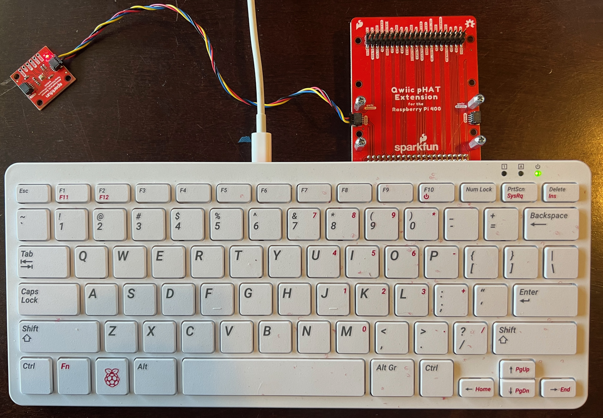

Atmospheric sensing, posting data to an online dashboard#
In this lesson we’ll collect temperature, humidity, and air pressure data from a sensor and post it to an online dashboard. You can also post data from your VOC and PM sensors to the same dashboard - for a challenge after getting this code to work, try sending other data to the dashboard.
Parts list#
For this exercise you’ll need:
Raspberry Pi 400 computer
Sparkfun Qwiic pHAT Extension
Sparkfun BME280 Atmospheric Sensor
Sparkfun Qwiic cable (500mm)
Initial State access and bucket keys
An internet connection
If you haven’t used Initial State before, start with their Getting Started documentation.
Wire pHAT and sensor#

Write a Python 3 program#
To use the following code, open a command terminal. Then enter the following command:
source ~/code/4cscc-ln/venv/bin/activate
If this works you should see (venv) on the far left of the text in
your terminal.
Then, enter the following command to start an ipython terminal:
ipython
Finally, copy paste the following code into the ipython terminal. This will collect data from your atmospheric sensor every 10 second and display on an online dashboard. It will run until you press “Control-c” (i.e., press the “control” and “c” keys at the same time).
import qwiic_bme280
from time import sleep, time
import sys
import urllib.request
import urllib.parse
import socket
import math
hostname = socket.gethostname()
# The following values should be added from your Initial State account.
# See https://www.initialstate.com/
access_key = '' # EDIT: Add your Initial State API endpoint access key
bucket_key = '' # EDIT: Add your Initial State API endpoint bucket key
inst_api_endpoint = "https://groker.init.st/api/events?accessKey=%s&bucketKey=%s" % (access_key, bucket_key)
def report_string_inst(name, value):
name = urllib.parse.quote(name)
value = urllib.parse.quote(value)
urllib.request.urlopen(inst_api_endpoint + '&%s=%s' % (name, value))
def report_status(value,quiet=False):
if not quiet:
print(value)
report_string_inst("status", value)
def report_tph_inst(sensor):
t = sensor.temperature_fahrenheit
p = sensor.pressure
h = sensor.humidity
print(t, p, h)
urllib.request.urlopen(inst_api_endpoint +\
"&tempF=%1.2f" % t +\
"&pressure=%1.2f" % p +\
"&humidity=%1.2f" % h)
def warmup_sensor(sensor, reporting_frequency, warmup_time):
if warmup_time < 1:
return
start_time = time()
while True:
current_time = time()
runtime = current_time - start_time
if runtime < warmup_time:
remaining_warmup_time_s = warmup_time - runtime
remaining_warmup_time_m = math.ceil(remaining_warmup_time_s / 60)
if remaining_warmup_time_m == 1:
unit = "minute"
else:
unit = "minutes"
report_status("%s warming up (about %d %s left)." %
(hostname, remaining_warmup_time_m, unit))
sleep(reporting_frequency)
else:
return
def run(reporting_frequency=10, warmup_time=60):
print("\nAtomospheric sensor (BME280) on %s:\n" % hostname)
sensor = qwiic_bme280.QwiicBme280()
if not sensor.is_connected():
print("BME280 device not detected. Is it connected?", \
file=sys.stderr)
return
sensor.begin()
report_status("%s online." % hostname)
# The first reading from this sensor is noise, so collect and ignore
# data.
_ = sensor.temperature_fahrenheit
_ = sensor.pressure
_ = sensor.humidity
warmup_sensor(sensor, reporting_frequency, warmup_time)
try:
while True:
sleep(reporting_frequency)
report_tph_inst(sensor)
report_status("%s reporting." % hostname, quiet=True)
except (KeyboardInterrupt, SystemExit):
report_status("%s offline." % hostname)
run()
Dashboard output#